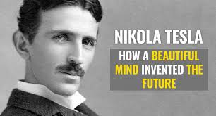
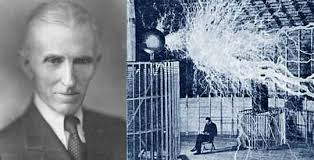

EARLY LIFE
- Nikola Tesla (/ˈtɛslə/;[2] Serbo-Croatian: [nǐkola têsla]; Serbian Cyrillic: Никола Тесла; 10 July 1856 – 7 January 1943) was a Serbian American inventor, electrical engineer, mechanical engineer, physicist, and futurist who is best known for his contributions to the design of the modern alternating current (AC) electricity supply system.Born and raised in the Austrian Empire, Tesla received an advanced education in engineering and physics in the 1870s and gained practical experience in the early 1880s working in telephony and at Continental Edison in the new electric power industry. He emigrated to the United States in 1884, where he would become a naturalized citizen. He worked for a short time at the Edison Machine Works in New York City before he struck out on his own. With the help of partners to finance and market his ideas, Tesla set up laboratories and companies in New York to develop a range of electrical and mechanical devices. His alternating current (AC) induction motor and related polyphase AC patents, licensed by Westinghouse Electric in 1888, earned him a considerable amount of money and became the cornerstone of the polyphase system which that company would eventually market.Attempting to develop inventions he could patent and market, Tesla conducted a range of experiments with mechanical oscillators/generators, electrical discharge tubes, and early X-ray imaging. He also built a wireless-controlled boat, one of the first ever exhibited. Tesla became well known as an inventor and would demonstrate his achievements to celebrities and wealthy patrons at his lab, and was noted for his showmanship at public lectures..
- In 1887, Tesla met two investors who agreed to back the formation of the Tesla Electric Company. He set up a laboratory in Manhattan, where he developed the alternating current induction motor, which solved a number of technical problems that had bedeviled other designs. When Tesla demonstrated his device at an engineering meeting, the Westinghouse Company made arrangements to license the technology, providing an upfront payment and royalties on each horsepower generated. The so-called “War of the Currents” was raging in the late 1880s. Thomas Edison promoted direct current, asserting that it was safer than AC. George Westinghouse backed AC, since it could transmit power over long distances. Because the two were undercutting each other’s prices, Westinghouse lacked capital. He explained the difficulty and asked Tesla to sell his patents to him for a single lump sum, to which Tesla agreed, forgoing what would have been a vast fortune had he held on to them.
- Alan Turing shared with his brother a childhood rigidly determined by the demands of class and the exile in India of his parents. Until his father's retirement from India in 1926, Alan Turing and his elder brother John were fostered in various English homes where nothing encouraged expression, originality, or discovery. Science for him was an extra-curricular passion, first shown in primitive chemistry experiments. But he was given, and read, later commenting on its seminal influence, a popular book called Natural Wonders Every Child Should Know.
